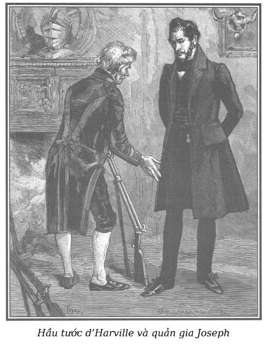

Muốn bằng mọi giá báo cho phu nhân d’Harville biết rằng nàng đang lâm vào vòng nguy hiểm, Rodolphe rời đại sứ quán trước khi Tom và Sarah trao đổi xong câu chuyện nên không biết được âm mưu họ đang trù tính để mưu hại Marie và mối nguy cơ sắp tới đe dọa cô.
Tuy nhiệt tình nhưng lại cũng vì rủi ro mà Rodolphe không thể cứu được Hầu tước phu nhân như ông đã hy vọng.
Rời đại sứ quán, theo phép lịch sự, nàng phải có mặt một lúc tại dinh phu nhân de Nerval, nhưng do không còn chịu đựng nổi những xúc động giày vò, phu nhân d’Harville không còn đủ can đảm đến dự buổi lễ hội thứ hai, nên quay trở về nhà.
Việc bất trắc ấy làm hỏng mất mọi sự.
Ông de Graün cũng như hầu hết những người trong nhóm giao du, cả Bá tước phu nhân de +++ được mời đến nhà phu nhân de Nerval; Rodolphe cử ông này đến đấy thật nhanh chóng với nhiệm vụ phải tìm gặp phu nhân d’Harville cho bằng được trong cuộc khiêu vũ và báo trước cho nàng rằng ông hoàng muốn trao đổi với nàng ngay đêm nay vài câu chuyện cực kỳ quan trọng; ông sẽ tiến đến gần cỗ xe chở Hầu tước phu nhân để trao đổi qua cửa xe trong lúc gia nhân đợi mở cổng.
Sau khi đã mất rất nhiều thời gian để tìm gặp phu nhân d’Harville trong cuộc khiêu vũ, ông Nam tước quay trở lại… không hề thấy nàng xuất hiện.
Rodolphe thất vọng, ông đã khôn ngoan mà nghĩ rằng trước hết phải báo ngay cho Hầu tước phu nhân biết về âm mưu phản bội mà mục đích là biến nàng thành nạn nhân, và lúc đó thì sự tố giác của Sarah mà ông không thể ngăn cản được sẽ bị coi như một điều vu cáo đê tiện. Chậm quá mất rồi! Lá thư bỉ ổi đã đến tay ông Hầu tước lúc một giờ sáng.
Sáng ngày hôm sau, ông d’Harville đi chậm rãi trong buồng ngủ, buồng bày biện đơn giản nhưng thanh nhã và chỉ trang hoàng một bộ sưu tập vũ khí hiện đại và một giá đầy những sách. Giường, màn vẫn nguyên, tuy nhiên chỉ có một tấm chăn trải giường bằng lụa chần bông bị xé rách bươm vứt ở đấy, một chiếc ghế và một chiếc bàn nhỏ bằng gỗ mun bị xô đổ gần lò sưởi. Ở một chỗ khác trên thảm trải sàn có những mảnh vỡ của một cốc pha lê, những ngọn nến bị giẫm bẹp một nửa và một giá cắm nến hai nhánh lăn ra xa.
Cảnh hỗn loạn ấy hình như do một cuộc vật lộn lớn, kịch liệt gây ra.
Ông d’Harville trạc ba mươi tuổi, gương mặt rõ nét trượng phu, bình thường thì dễ chịu và hiền hậu nhưng lúc này thì căng thẳng, nhợt nhạt và tím tái. Ông vẫn mặc bộ quần áo tối hôm trước, cổ để hở, áo gi-lê phanh ngực, sơ mi xé toạc dường như rớm máu đôi chỗ, tóc nâu thường ngày vẫn uốn nhưng giờ thì rũ xuống cứng queo và rối tung trên vầng trán tái mét.
Đi đi lại lại khá lâu, cánh tay khoanh trước ngực, đầu cúi thấp, mắt mở trừng trừng và đỏ ngầu, ông d’Harville bỗng nhiên đứng phắt lên trước lò sưởi tắt ngấm, mặc dù ban đêm tuyết rơi khá nhiều. Ông cầm lá thư để trên rìa đá hoa lò sưởi chăm chú đọc lại trong ánh sáng nhợt nhạt ban mai.
Một giờ trưa ngày mai, vợ ngài sẽ đi với người đàn ông khác ở số nhà 17, phố Temple, theo cô ả, rồi ngài sẽ biết hết… Đấng phu quân hạnh phúc thật!
Tuy đã đọc đi đọc lại lá thư không biết bao nhiêu lần, đôi môi tím đi vì rét và giật giật vẫn như đánh vần từng chữ ấy!
Vào lúc đó cửa phòng mở ra, người hầu buồng bước vào, người lão bộc tóc bạc ấy thật thà, phúc hậu. Ông Hầu tước đột nhiên quay lại, không thay đổi tư thế, tay vẫn cầm lá thư, ông xẵng giọng:
– Muốn gì?
Người này thay vì trả lời, sửng sốt và đau khổ nhìn cảnh lộn xộn trong phòng, chăm chăm nhìn chủ rồi la lên:
– Áo sơ mi có máu, trời đất ơi, trời đất ơi, ngài lại bị thương hay sao thế này? Ngài chỉ có một mình, sao không gọi chuông như mọi ngày mỗi khi ngài cảm thấy…
– Cút đi!
– Nhưng thưa ngài Hầu tước, ngài không nghĩ đến điều đó à? Lửa tắt ngấm mà ở đây thì rét chết người, nhất là sau khi…
– Có im đi không? Mặc tôi!
Người lão bộc run giọng:
– Nhưng thưa ngài Hầu tước, ngài có lệnh cho ông Doublet phải có mặt tại đây lúc mười giờ rưỡi sáng hôm nay mà bây giờ thì đã đúng giờ rồi, ông ta cùng viên chưởng khế đã đến ạ.
– Ừ nhỉ! – Hầu tước nói một cách cay đắng và bình tĩnh trở lại, – khi người ta giàu có thì phải nghĩ đến công việc chứ; có lắm của cải cũng sướng thật!
Rồi ông lại nói tiếp:
– Đưa ông Doublet vào phòng làm việc của tôi.
– Thưa, ông ta đang ở đấy.
– Lấy quần áo cho tôi mặc, chút nữa tôi sẽ ra.
– Nhưng thưa Hầu tước…
– Làm những gì tôi bảo, Joseph! – Ông Hầu tước nói, đã dịu dàng hơn, rồi ông nói thêm. – Đã có ai đến chỗ phu nhân chưa?
– Bẩm nếu có thì phu nhân đã gọi chuông.
– Khi nào có chuông gọi thì bảo tôi đấy.
– Thưa, vâng ạ.
– Bảo Philippe giúp một tay, mình lão thì bao giờ mới xong được.
– Nhưng thưa ngài, đợi tôi thu dọn ở đây chút đã, – ông lão Joseph buồn rầu đáp lại – người ta sẽ thấy lộn xộn, không hiểu chuyện gì đã xảy ra hồi đêm cho Hầu tước đấy.
Ông d’Harville nói giọng giễu cợt và đau khổ:
– Nếu họ biết thì gớm lắm phải không?
– Chà, thưa ngài, – Joseph thở dài – tạ ơn Chúa, không ai dám ngờ gì cả đâu.
– Không ai? Không! Chẳng có ai! – Hầu tước lẩm bẩm.
Trong khi Joseph bận rộn thu dọn gian phòng lộn xộn, ông Hầu tước đi thẳng lại chỗ để bảng sưu tập vũ khí đã nói trên đây, xem xét kĩ lưỡng một lúc, làm một điệu bộ hài lòng quái gở và bảo Joseph:
– Tôi nhắc mà lão lại quên chưa lau những khẩu súng trong bộ đồ đi săn của tôi trên kia rồi.
Lão Joseph ngạc nhiên:
– Thưa, ngài Hầu tước chưa truyền lệnh ấy lúc nào cả ạ.
– Có chứ, nhưng lão đã quên đấy!
– Tôi xin cam kết với ngài Hầu tước…
– Mấy khẩu súng ấy hẳn vẫn tốt nhỉ!
– Thưa, mới từ cửa hàng đem về chưa được một tháng ạ.
– Cũng chẳng quan trọng! Khi nào tôi mặc quần áo xong, đi lấy bộ đồ săn cho tôi, có lẽ ngày mai hoặc sau đó tôi sẽ đi săn đấy, tôi muốn kiểm tra lại mấy khẩu súng ấy.
– Thưa, lát nữa tôi sẽ đem xuống.
Gian phòng đã gọn ghẽ, người hầu buồng khác đến giúp lão Joseph.
Y phục đã chỉnh tề, Hầu tước vào văn phòng, ở đó ông Doublet, người quản lý và một người thư ký phòng văn khế đã ngồi chờ sẵn.
Người quản lý thưa:
– Đây là văn bản đưa đến đọc cho ngài Hầu tước duyệt, chỉ còn có việc ký thôi ạ.
– Ông đã đọc kĩ rồi chứ, ông Doublet?
– Vâng, thưa ngài Hầu tước.
– Trong trường hợp này, như thế này là được. Tôi ký đây.
Ông ký vào văn bản. Người thư ký rút lui.
Ông Doublet hoan hỉ.
– Thưa ngài Hầu tước, nhờ tậu được những khoảnh đất ấy, hoa lợi tính thành tiền mỗi năm đem lại không dưới một trăm hai mươi sáu nghìn franc, ngài biết cho, như thế là tuyệt diệu đấy, thưa ngài Hầu tước! Chỉ có đất đai không thôi nhé mà lợi tức đã lên tới một trăm hai mươi sáu nghìn franc!
– Tôi thật hết sức may mắn phải không, ông Doublet? Những một trăm hai mươi sáu nghìn franc, riêng chỉ về ruộng đất! Mấy ai đại phúc được như thế!
– Đó là chưa kể ghế Bộ trưởng của ngài Hầu tước, chưa kể…
– Tất nhiên, và không thể kể đến bao nhiêu điều hạnh phúc khác nữa!
– Ơn trời ban phúc, thưa ngài Hầu tước, vì ngài có còn thiếu gì nữa ạ: tuổi trẻ này, giàu có này, nhân hậu này, mạnh khỏe này! Tóm lại biết bao nhiêu là điều sung sướng dồn lại cho ngài, – ông Doublet mỉm một nụ cười dễ chịu – và trong những điều sung sướng ấy hay nói cho đúng thì sung sướng nhất là được người vợ như Hầu tước phu nhân và tiểu thư bé nhỏ xinh xắn cứ như thiên thần ấy!
Ông d’Harville thê thảm nhìn ông quản lý.
Chúng tôi đành chịu không tài nào diễn tả cho được ý vị mỉa mai cục cằn của ông Hầu tước khi vừa nói vừa vỗ vai ông Doublet:
– Với một trăm hai mươi sáu nghìn franc lợi tức ruộng đất, một bà vợ như thế… và một đứa con gái cứ như thiên thần… thì còn có gì mà ao ước hơn được nữa nhỉ, phải không ông?
Người quản lý khờ khạo trả lời:
– Chà, chà, thưa ngài Hầu tước, còn chứ ạ! Ao ước sống càng lâu càng tốt, để còn gả chồng cho tiểu thư và trở thành ông ngoại, đó là điều mà tôi muốn chúc cho ngài Hầu tước cũng như phu nhân trở thành ông bà rồi lại thành cụ kị…
– Cái ông Doublet tốt bụng này, lại nghĩ đến Philemon và Baucis* đây, tài thật, lúc nào cũng nói đúng chỗ, đúng lúc ghê!
Đôi vợ chồng trong thần thoại Hy Lạp, được coi là điển hình cho vợ chồng hòa thuận, bách niên giai lão.
– Ngài Hầu tước quá khen, ngài còn có truyền gì nữa không?
– Không! À, mà có đấy, hiện ông đang có bao nhiêu tiền mặt trong tay?
– Mười chín nghìn ba trăm lẻ vài franc, thưa ngài Hầu tước, nếu không tính số tiền gửi ngân hàng.
– Vậy trong sáng nay, ông hãy giao số vàng đó cho ông Joseph nếu tôi đi rồi nhé.
– Sáng nay ạ?
– Đúng, sáng nay.
– Sau một giờ nữa, tôi sẽ đem đến. Ngài Hầu tước còn truyền gì nữa không ạ?
– Thôi, ông Doublet ạ!
Ông quản lý vừa đi ra, vừa lẩm bẩm:
– Một trăm hai mươi sáu nghìn franc tròn, ngày hôm nay may cho ta thật! Cứ lo là cái trang trại vừa ý như thế lại sổng mất… Thưa Hầu tước, xin chào ngài.
– Chào ông Doublet.
Người quản lý vừa đi khỏi, ông d’Harville đã gieo mình xuống ghế ủ rũ, mệt mỏi rã rời. Ông chống hai khuỷu tay lên bàn, gục mặt trong hai bàn tay.
Đây là lần đầu sau khi nhận được lá thư tai hại của Sarah, ông có thể khóc.
– Chao ôi, số mệnh khéo trớ trêu, cho tôi giàu có đến thế này! Bây giờ tôi đặt cái gì đây trong cái khung vàng son ấy được nào? Nỗi sỉ nhục của tôi! Nỗi ô nhục của Clémence! Nỗi ô nhục để đời, tai tiếng để lên tận đầu con gái ta! Tai tiếng ấy… hoặc là ta phải tự giải quyết, hoặc là ta có nên thương hại?
Thế rồi ông đứng dậy, mắt long lanh, miệng mím chặt, ông gầm lên trong họng:
– Không, không! Máu phải đổ! Đem cái ghê gớm mà tránh cái lố lăng làm trò cười cho thiên hạ, đến nay ta mới hiểu vì sao nó ghê tởm ta… con khốn nạn!
Rồi đột nhiên ngừng lại, như hoảng sợ vì một ý nghĩ bất ngờ đưa đến, ông khàn khàn than vãn:
– Nàng ghê tởm ta… ôi, ta thừa biết điều gì đã gây ra như vậy, ta, chính ta khiến nàng ghê tởm, ta khiến nàng khiếp sợ ta!
Sau một hồi im lặng khá lâu, ông tiếp tục than thở:
– Nhưng đâu phải lỗi của ta, lỗi về ta? Can gì mà phải phụ ta vì thế, thay vì thù ghét thì phải thương hại ta, vì ta đáng được thương hại, như thế mới đúng chứ! – Ông vừa nói vừa sôi nổi dần. – Không, không, không! Phải đổ máu mới xong… cả hai, cả hai đứa! Vì hiển nhiên là nó đã nói hết với thằng kia.
Ý nghĩ ấy khiến cơn thịnh nộ của Hầu tước tăng lên gấp bội. Ông nắm chặt hai tay, đưa lên trời, rồi đặt bàn tay nóng rực lên mắt, thấy mình cần phải giữ được bình tĩnh trước đám gia nhân, ông trở về phòng ngủ ra vẻ thanh thản, Joseph đang ở đấy.

.– Thế nào, mấy khẩu súng đâu?
– Thưa ngài Hầu tước, súng đây ạ, vẫn tốt nguyên.
– Tôi sẽ kiểm tra lại xem có đúng không, bà đã gọi chuông đấy à?
– Tôi không được rõ, thưa ngài Hầu tước!
– Lão ra xem thế nào.
Người hầu buồng đi ra.
Ông d’Harville vội lấy trong hòm đựng súng một bình dạng quả lê chứa thuốc đạn, vài viên đạn, hạt nổ, rồi ông khóa hòm lại, giữ chìa khóa. Sau đó ông đến bảng sưu tập vũ khí, lấy ở đó hai khẩu súng lục Manton cỡ 1/2, lên đạn và dễ dàng bỏ lọt thỏm vào túi áo redingote.
Vừa lúc đó Joseph đi vào.
– Thưa Hầu tước, phu nhân đã dậy!
– Có phải phu nhân đã hỏi xe?
– Thưa ngài Hầu tước, không ạ. Cô Juliette đã nói trước mặt tôi với người đánh xe của phu nhân đến hỏi công việc cho buổi sáng nay, rằng nếu trời lạnh và khô ráo thì nếu có cần đi đâu phu nhân sẽ đi bộ thôi.
– Được, à tôi quên khuấy đi mất, có thể ngày mai hoặc ngày kia, tôi sẽ đi săn. Bảo Williams kiểm tra lại cỗ xe ngựa nhỏ màu xanh lục ngay sáng nay nhé, rõ chưa?
– Thưa Hầu tước, vâng ạ. Ngài không đem gậy đi theo ạ?
– Không, gần đây có bến xe ngựa cho thuê đấy nhỉ?
– Rất gần thôi ạ, ở góc phố Lille.
Sau một hồi đắn đo im lặng, Hầu tước nói tiếp:
– Vào hỏi cô Juliette xem có vào thăm phu nhân được không?
Joseph đi ra.
– Nào! Hừ, thực đúng là một tấn kịch! Như mọi tấn kịch, đúng, ta muốn đến tận buồng nó và thấy rõ cái mặt nạ ngọt nhạt đầu lưỡi và phản trắc mà kẻ đê tiện ấy nấp đằng sau để nghĩ đến chuyện ngoại tình sắp tới, ta sẽ nghe cái miệng dối trá huyên thuyên trong khi nhìn thấu tâm can thối nát tội lỗi ấy – đúng! Hay đấy! Xem họ nhìn ta, họ nói, họ trả lời ta, con đàn bà sắp sửa làm nhơ nhuốc tên tuổi của ta bằng tội lỗi nhố nhăng và ghê tởm chỉ có thể rửa sạch bằng máu… Ta điên rồi chăng? Nó sẽ nhìn ta như mọi ngày, nụ cười trên miệng, chân thành trên trán. Nhìn ta cũng như nhìn con gái, hôn lên trán nó, giục nó cầu xin Chúa… cái nhìn… cái gương của tâm hồn, – ông nhún vai khinh bỉ – càng tỏ vẻ dịu dàng và tiết hạnh biết bao nhiêu thì lại càng giả tạo và hư hỏng bấy nhiêu. Nó sẽ thanh minh… và ta sẽ mắc hợm như một thằng ngốc. Ôi cuồng hận! Hẳn nó sẽ lạnh lùng ngạo mạn, khinh miệt mà ngắm ta qua tấm gương bịp bợm lúc nó sắp đến với thằng kia. Ta quý mến và âu yếm nó đến thế là cùng còn gì! Ta trò chuyện với nó như với một đức mẹ tiết hạnh, đứng đắn, nghiêm trang. Ta đặt toàn bộ hy vọng cuộc đời ta trong tay nó! Không, không! – Ông d’Harville tức giận, thét lên rất to. – Không, ta sẽ không thèm đến với nó nữa, ta không muốn trông thấy mặt nó nữa… Cả con gái ta nữa… tự ta sẽ khiến mình lộ hết, ta sẽ làm hỏng việc trả hận của ta.
Ra khỏi buồng ngủ, thay vì đi vào phòng Hầu tước phu nhân, ông chỉ nói với cô hầu buồng:
– Chị sẽ nói lại với phu nhân, sáng nay ta có chuyện định nói nhưng ta bận phải ra ngoài kia một lát, nếu phu nhân thấy muốn cùng ta dùng bữa thì đến trưa ta sẽ về, nếu không thì phu nhân cũng đừng bận tâm làm gì!
Nghĩ rằng ta sắp quay trở về, cô ấy chắc sẽ tha hồ tự do đấy. Hầu tước d’Harville tự nhủ vậy và ông đi đến bến xe ngựa cho thuê gần nhà.
– Bác đánh xe! Thuê xe bây giờ đây!
– Được ông ạ, bây giờ là mười một giờ rưỡi. Ông muốn đi đâu?
– Phố Belle-Chasse, ở chỗ góc phố Saint-Dominique, dọc bức tường của khu vườn, ở chỗ ấy… bác đỗ xe và đợi ở đấy nhé.
– Được, ông chủ ạ.
Ông d’Harville hạ mành che cửa, cỗ xe chuyển bánh và nhanh chóng đến ngay trước cửa biệt thự nhà ông. Từ nơi này, không ai có thể từ trong nhà đi ra mà thoát được mắt ông.
Vợ ông đã hẹn lúc một giờ trưa, mắt ông trợn trừng, giận dữ chòng chọc nhìn vào cổng nhà mình, ông sốt ruột đợi chờ.
Mạch suy nghĩ của ông như bị dòng thác của giận dữ cuốn đi đến chóng cả mặt, khiến cho thời gian trôi đi nhanh chóng khó tưởng.
Chuông nhà thờ Saint-Thomas-d’Aquin điểm mười hai giờ trưa, vừa lúc đó cổng biệt thự d’Harville mở từ từ, Hầu tước phu nhân đi ra.
– Rồi kia à! Ái chà! Ân cần gớm! Nó sợ thằng kia phải đợi! – Hầu tước lẩm bẩm bằng một giọng mỉa mai.
Trời rét, đá lát đường khô ran.
Clémence đội mũ lụa đen, phủ tấm mạng cùng màu che mái tóc vàng hoe, mặc áo choàng lụa chần bông màu quả nho xứ Korinthos*. Một chiếc khăn san Cachemire lớn màu lam sẫm rũ xuống tận gấu áo mà nàng nhẹ nhàng và duyên dáng vén lên khi bước qua đường.
Một thành phố Hy Lạp nổi tiếng về nho và rượu nho.
Động tác ấy để lộ ra mắt cá đôi bàn chân nhỏ nhắn, cong cong lồng trong đôi giày có cổ bằng satin Thổ Nhĩ Kỳ.
Lạ một điều là, mặc dù đang choáng váng vì những ý nghĩ đáng sợ, ông d’Harville lúc đó lại mới nhận ra là chân vợ ông chưa lúc nào xinh xắn và đẹp bằng lúc này. Càng nhìn, càng tức giận, ông cảm thấy vết thương lòng nhức nhối ghê gớm do lòng ghen tuông về xác thịt gây nên… ông thấy thằng kia quỳ xuống, say sưa đưa cái bàn chân quyến rũ ấy lên môi… trong khoảnh khắc tất cả những hình ảnh yêu đương si mê cuồng dại rừng rực hiện lên trong đầu ông.
Thế rồi, lần đầu tiên trong đời, ông cảm thấy tim mình thắt lại, một cơn đau đớn thể xác dữ dội, gay gắt thấm thía buộc ông gần như phải thét lên, cho đến lúc đó, chỉ mới mỗi tâm hồn ông là đau khổ, bởi ông chỉ mới nghĩ đến bổn phận thiêng liêng bị xúc phạm mà thôi.
Ông xót xa đau đớn đến nỗi không còn che giấu được, giọng nói lạc hẳn khi vén mành che cửa để bảo xà ích:
– Bác có thấy phu nhân quàng khăn xanh và đội mũ đen đi dọc bức tường kia không?
– Có đấy, thưa ông chủ.
– Cho ngựa đi bước một theo chân bà ta… nếu bà ta tới bến xe ngựa lúc nãy tôi đến, thì cho xe đến đó và đi theo cỗ xe mà bà ta thuê.
– Được, ông chủ ạ. Chà! Hay đấy!
Quả vậy, bà d’Harville đi đến bến xe ngựa và lên một cỗ xe.
Xà ích chở ông d’Harville đánh ngựa đi theo.
Cả hai cỗ xe lăn bánh.
Được một lúc, ông Hầu tước rất ngạc nhiên thấy xà ích đi vào con đường nhà thờ Saint-Thomas-d’Aquin và nhanh chóng đỗ lại.
– Ê này, làm cái gì thế này!
– Ông chủ ơi, bà phu nhân vừa xuống chỗ nhà thờ kia…
Mẹ kiếp! Dù sao thì bàn chân cũng cứ là đẹp… thú vị quá… Vô vàn ý nghĩ khác nhau giày vò ông d’Harville, thoạt đầu ông tin rằng vợ ông nhận thấy mình bị theo dõi, muốn đánh lạc hướng rồi ông lại nghĩ rằng có thể lá thư ông nhận được là một lời vu cáo xấu xa… Nếu Clémence phạm tội, thì cần gì mà phải giả vờ sùng đạo như thế! Phải chăng là một sự báng bổ phạm thượng.
Một lúc sau, ông d’Harville đã thoáng hy vọng vì có biết bao nhiêu điều trái ngược giữa vẻ sùng đạo rõ ràng và mánh lới của người vợ đang bị cáo buộc.
Ảo tưởng ấy không kéo dài.
Người đánh xe của ông cúi xuống:
– Ông chủ, phu nhân nhỏ nhắn lại lên xe!
– Theo đi!
– Được ông chủ ạ. Thú vị đấy, thú vị đấy!
Cỗ xe đi qua các bến cảng, tòa thị chính, phố Sainte-Avoye, sau đó là phố Temple.
– Ông chủ, – người đánh xe quay lại phía sau, – anh bạn kia vừa đỗ xe ở nhà số 17, chúng ta vừa đến số nhà 13, ta cũng đỗ lại chứ?
– Được.
– Ông chủ! Phu nhân nhỏ nhắn vừa đi vào ngõ nhà số 17.
– Mở cửa xe giúp tôi.
– Vâng ạ.
Vài giây sau, ông d’Harville đi vào trong ngõ theo gót bà vợ.